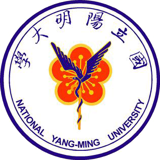

國立陽明大學校徽
國立陽明大學校徽

國立交通大學校徽
以對等、尊重為原則，針對陽明大學校徽、交通大學校徽及原兩校其他重要學校象徵中希望儘量在陽明交大校徽中予以保留的元素，本校校務會議同意由識別系統小組來自陽明校區的成員及來自交大校區的成員各自分開討論後，由來自陽明校區的成員提出在陽明大學校徽及其他陽明大學重要象徵中希望優先保留的元素，由來自交大校區的成員提出在交通大學校徽及其他交通大學重要象徵中希望優先保留的元素，並在徵件說明中提供有意參選的設計人或團隊做為參考，但不硬性要求使用。經識別系統小組成員分組討論後，分別提出以下希望在本校校徽中予以優先保留的元素 :
陽明大學校徽及其他陽明大學重要象徵中，希望優先保留的元素如下：
1975年
國立陽明醫學院首任院長韓偉博士，於1975年5月15日接下聘書，與創校長老們，胼手胝足建立陽明基業。創校年份象徵著後人對於老陽明人的感念與不忘本。
單蛇杖與翅膀：
單蛇杖又稱「阿斯克勒庇俄斯之杖」(Rod of Asclepius)，乃希臘神話中醫神的手杖，其中向上爬升的的蛇能夠蛻皮，象徵醫療的「治癒」與「恢復」。雙翅膀與單蛇杖同為醫學之象徵，同時也代表不斷向上、不斷創造卓越的陽明精神。
真知力行：
真知，或作真理(veritas)。「真知力行」象徵陽明大學師生校友，為求真理，一步一腳印逐步踏實的實踐精神。
仁心仁術：
陽明大學脫胎於陽明醫學院，使命乃培育卓越且具人文關懷與服務奉獻精神之醫療從業人員，以臻「社會幸福、全民健康」之理想。
交通大學校徽及其他交通大學重要象徵中，希望優先保留的元素如下：
(第一優先) 交通大學校徽中的1896 :
1896年是交通大學的創校年份。
(第二優先) 交通大學校徽中的齒輪 :
齒數六十，代表一甲子，齒輪運轉不息，彰顯「天行健，君子以自強不息」的意義。
(第三優先) 交通大學校徽中的鐵砧、鐵鎚及書本 :
蘊含了不同知識領域、學貫中西、理論與實作並重、及精誠團結等意義。